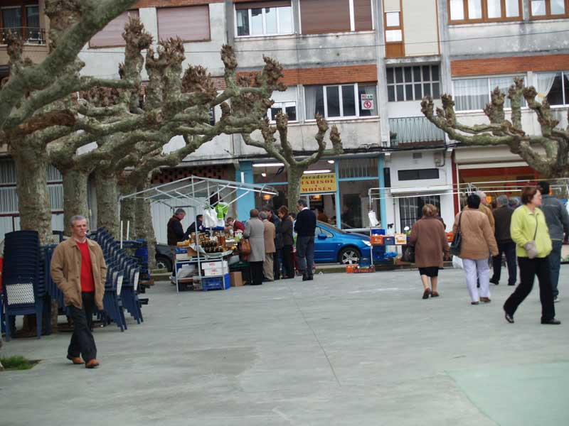

Encuentro en SantoñaAnterior | Inicio | Siguiente |
|
 Aquél puesto del fondo, donde podemos ver a Carlos Bitaubé, Merino y Manolo, fue muy celebrado, pues era el de los frutos secos, pero no por ellos tuvo la aceptación, sino por un original cascanueces que 'casi' todos compramos y aquí vemos. |